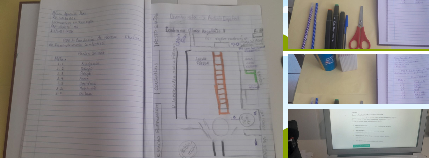
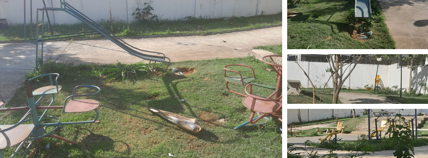
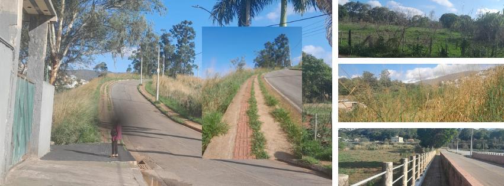
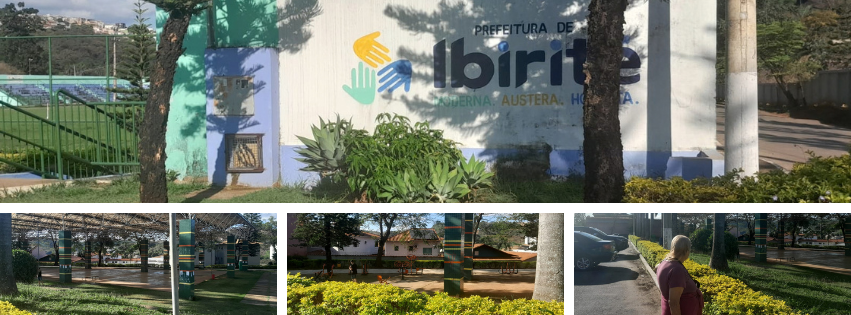
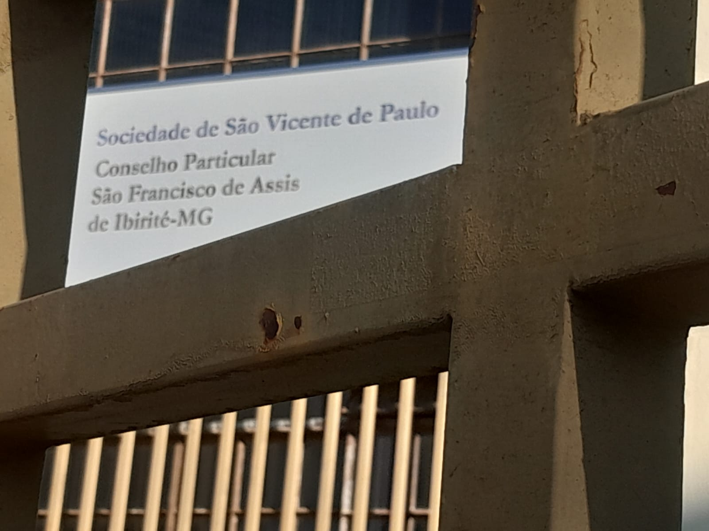
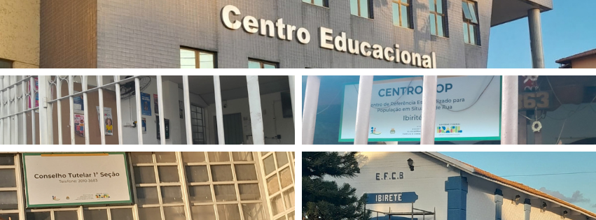
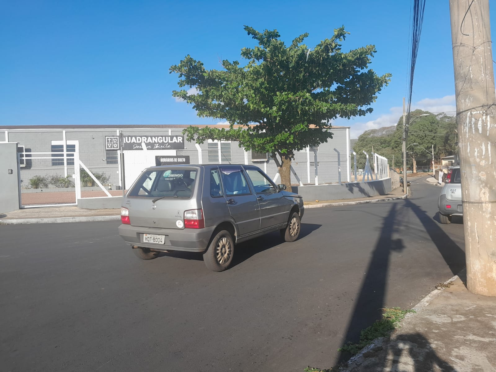

Um Web App Educacional para o Ensino Médio sobre território, pobreza e cidadania
Antes de qualquer ferramenta digital, a proposta começou no papel. A atividade inicial foi desenvolvida no caderno, com observação direta do território, mapeamento à mão e reflexão sobre as condições de vida no entorno da escola. Essa etapa é fundamental: o estudante precisa ver com os próprios olhos antes de registrar com a câmera ou interagir com o mapa digital.

Dupla página com: identificação (nome, RU, curso, polo, data) · tabela de metas ODS 1 preenchida (1.1 a 1.b) · mapa social desenhado à mão com rota, equipamentos públicos e rede de proteção · registro do produto digital em uso.
A metodologia parte da experiência concreta do estudante com seu território antes de introduzir a tecnologia. Isso alinha-se à pedagogia de Milton Santos: o espaço geográfico é produto das relações sociais e deve ser lido como texto vivo, não apenas como dado cartográfico.
O percurso foi realizado a pé pelo bairro Várzea e entorno, registrando as contradições do território: infraestrutura degradada convivendo com equipamentos públicos essenciais e redes comunitárias ativas.

Equipamento público degradado, sem manutenção. Ausência de espaço seguro de lazer — fator de vulnerabilidade social.

Vias com mato alto, calçadas quebradas e sem acessibilidade. Risco para idosos, pessoas com deficiência e crianças.

Centro administrativo acessível à população. Espaço de convivência e eventos culturais. Referência institucional para exercício de cidadania.

Instituição de acolhimento e assistência social. Presença comunitária histórica, atuando na proteção de famílias vulneráveis.

Centro Educacional, Centro POP, Conselho Tutelar e Estação Municipal — compõem a rede de proteção social do território.

Igreja Quadrangular e entidades religiosas que atuam como apoio informal, ofertando serviços e espaços de sociabilidade à comunidade.
O percurso foi traçado a partir do bairro Várzea, passando pelos principais equipamentos públicos e pontos identificados no diagnóstico. Clique nos marcadores para ver detalhes de cada local.
O Web App Meu Bairro, Meus Direitos coloca o estudante como produtor de conhecimento sobre seu próprio território. A metodologia segue cinco etapas progressivas:
Observar: Caminhar pelo bairro com o olhar ativo. Identificar o que funciona bem, o que precisa de atenção e quais são os serviços de proteção disponíveis.
Registrar: Usar o Web App para fotografar locais, gravar relatos em áudio e adicionar pontos ao mapa interativo. Cada registro é salvo localmente no aparelho.
Analisar: Classificar cada local como ponto forte, ponto de atenção ou rede de proteção. Refletir: “Por que essa situação existe? Quem é responsável? O que pode mudar?”
Conectar com direitos: Cada ponto identificado conecta-se a direitos previstos na CF/1988, no ECA e no SUAS. O app mostra quais leis se aplicam e quais órgãos podem ser acionados.
Agir: Exportar o relatório, compartilhar com a turma, apresentar ao Conselho Tutelar ou Conselho Municipal de Direitos — transformando observação em ação cidadã.
O aplicativo foi desenvolvido como uma página HTML autossuficiente — funciona no celular sem precisar de internet após download. Os estudantes usam o próprio aparelho para mapear o seu bairro.
Adicionar pontos ao mapa clicando no local
Fotografar e incorporar imagens ao registro
Gravar relatos em áudio sobre cada local
Exportar relatório completo com fotos e áudios
Salvar os pontos no celular (funciona offline)
Arquivo HTML único — abra no celular ou computador, sem instalação
⬇ Baixar Web AppCompatível com Chrome, Firefox e Safari · Android e iOS
Art. 3º: erradicar a pobreza é objetivo fundamental da República. Art. 6º: direitos sociais. Art. 205–214: educação como direito.
Direito à convivência familiar e comunitária, ao lazer e ao espaço seguro. Conselho Tutelar como mecanismo de proteção acessível.
Estatuto da Pessoa com Deficiência: acessibilidade urbana, calçadas e espaços públicos como direitos exigíveis.
Sistema Único de Assistência Social: CRAS como porta de entrada da proteção básica. Orientações técnicas MDS sobre território e pobreza.
Meta 1.4: até 2030, garantir acesso a serviços básicos, tecnologia e recursos. Educação como vetor de transformação.
Uso de tecnologias digitais nas práticas educativas como forma de ampliar acesso, autonomia e protagonismo dos estudantes.